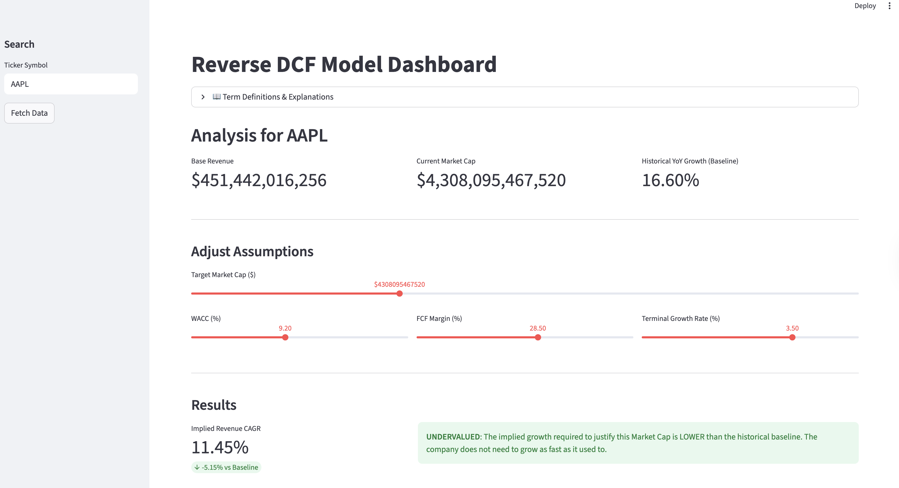

Beyond the Price Target: A Reverse DCF Framework for Expectation Investing
What is a DCF?
A Discounted Cash Flow (DCF) model is the “gold standard” of valuation. It operates on a simple premise: a company is worth the sum of all the cash it will ever make, brought back into today’s dollars.
To do this, we project Free Cash Flows (FCF) for a decade, add a “Terminal Value” for the years beyond, and apply a WACC (Weighted Average Cost of Capital) which is essentially a discount rate that accounts for risk and the time value of money.
Forward vs. Reverse DCF: Flipping the Script
The difference between these two models is essentially the direction of the math. To understand it, think of a Road Trip:
The Forward DCF (The “Estimated Arrival”)
In a standard DCF, you are the driver making guesses about the future.
- The Inputs: You decide the speed (Growth Rate) and how much gas you have (Margins).
- The Output: The model tells you where you will end up (The Fair Value).
- The Example: “If I drive at 60mph for 5 hours, I will be 300 miles away.”
- The Risk: If you are too optimistic about your speed, you’ll overestimate how far you’ll get.
Esentially, in a Forward DCF, the analyst is the driver. You input your assumptions for growth and margins, and the model outputs a “Fair Value.” The danger? Confirmation bias. If you like a stock, you might subconsciously nudge the growth rate higher to justify a “Buy” rating.
The Reverse DCF (The “Required Speed”)
In a Reverse DCF, the destination is already set by the market. We work backward to see if the trip is even possible.
- The Input: You start with the destination (The Current Market Cap).
- The Output: The model tells you how fast you must drive to get there in time (The Implied Growth Rate).
- The Example: “The destination is 300 miles away and I only have 3 hours. I must drive at 100mph to get there.”
- The Analysis: You then ask: “Is it realistic to drive 100mph? Does this car even go that fast?”
Essentially, in a Reverse DCF removes the analyst’s bias. Instead of guessing a growth rate to find a price, we take the current Market Cap as an objective fact and solve for the Implied Revenue CAGR (Compound Annual Growth Rate).
It changes the question from “What is this stock worth?” to “What must the market believe for this price to be right?”
By flipping the script, we move from predicting the future to auditing the market’s expectations.
Project Aim: Quantifying Market Optimism
The goal of this project was to build a production-grade tool that democratizes institutional-level expectations investing. By productionizing this dashboard, I aimed to:
- Isolate the “Expectations Gap”: Compare what the market expects vs. what a company has historically delivered.
- Stress-Test Assumptions: Visualize how sensitive a valuation is to shifts in macro factors like interest rates (WACC).
Technical Implementation: Under the Hood
The most challenging part of this project was moving from a static formula to a dynamic Numerical Solver. In a standard DCF, you calculate the result directly. In a Reverse DCF, you have to solve for a variable (\(g\)) that is buried inside a complex series.
The Optimization Problem
The “Fair Value” (\(V\)) of a company is the sum of its discounted future cash flows. Our goal is to find the specific growth rate (\(g\)) that makes this value equal to the current Market Cap (\(M\)):
\[f(g) = \left( \sum_{t=1}^{10} \frac{FCF_0(1+g)^t}{(1+WACC)^t} + \frac{TV}{(1+WACC)^{10}} \right) - M = 0\]
Since \(g\) appears in every term of the 10-year series, we cannot simply use basic algebra to isolate it. Instead, we use Numerical Root-Finding.
The “Hot or Cold” Solver
I implemented the solver using scipy.optimize.brentq. Think of this as a highly efficient version of “Goal Seek” in Excel.
- The Bracketing: We tell the computer to look for a growth rate between -50% and +100%.
- The Iteration: The algorithm picks a growth rate, calculates the resulting value, and checks how far it is from the Market Cap.
- The Convergence: It repeatably narrows the window (using a mix of bisection and inverse quadratic interpolation) until the difference between our calculated value and the market cap is effectively zero.
Data Architecture
To ensure the model is robust, the pipeline follows a three-stage process:
- Ingestion:
yfinancepulls raw TTM (Trailing Twelve Month) data. - Validation: The script handles edge cases, such as companies with negative FCF (which would break a standard growth solver).
- Execution: The Brent method typically finds the “Implied CAGR” in under 0.01 seconds, allowing for the real-time slider experience in the dashboard.
How to Use & Interpret the Results

Using the dashboard involves a “Reality Check” workflow:
- Fetch Data: Input a ticker (e.g., AAPL or MGNI). The tool pulls the baseline revenue and current market price.
- Set the Risk Hurdle: Adjust the WACC based on the current 10-year Treasury yield and the stock’s risk profile.
- Analyze the Implied CAGR:
Undervalued: If the Implied CAGR is significantly lower than the historical 5-year average, the market may be too pessimistic.
Overvalued: If the market expects 20% growth from a company that has matured at 5%, the stock is priced for perfection.
Future Innovation Axis: From Deterministic to Probabilistic
While the current dashboard provides a “snapshot” of market expectations, the next evolution of this tool involves moving away from static inputs toward dynamic, data-driven simulations.
1. Statistical Time Series Forecasting (ARIMA/Prophet)
Currently, our “Baseline” is a simple historical average. We can replace this with Time Series Modeling to create a more sophisticated “Expected Growth” benchmark.
- The Application: Instead of just comparing the Implied CAGR to last year’s growth, we can use an ARIMA or Exponential Smoothing model to forecast a 3-year revenue trend based on seasonality and momentum.
- The Value: If the market’s Implied CAGR falls outside the 95% confidence interval of our Time Series forecast, it provides a statistically significant signal of over/undervaluation.
2. Stochastic Modeling: Geometric Brownian Motion (GBM)
Stock prices and cash flows don’t move in straight lines. We can model the path of a company’s valuation as a Stochastic Process.
- The Application: By treating the company’s Free Cash Flow as a variable following Geometric Brownian Motion (GBM), we can account for “random walks” in profitability.
- The Value: This allows us to calculate the Probability of Default or the likelihood that a company hits its required growth targets given its historical volatility (\(\sigma\)).
3. Monte Carlo Expectation Ensembles
Instead of solving for a single growth rate, we can use Stochastic Simulations to vary WACC, Margins, and Terminal Growth simultaneously across thousands of iterations.
- The Application: We can assign probability distributions (e.g., a Normal distribution for WACC and a Lognormal distribution for Revenue) and run a Monte Carlo simulation.
- The Result: Instead of a single number, the dashboard would produce a Probability Density Function (PDF) of the stock’s intrinsic value, showing the most likely “Expectation Range.”
This project is a fusion of financial engineering and data science, designed to turn abstract market sentiment into hard, actionable numbers.